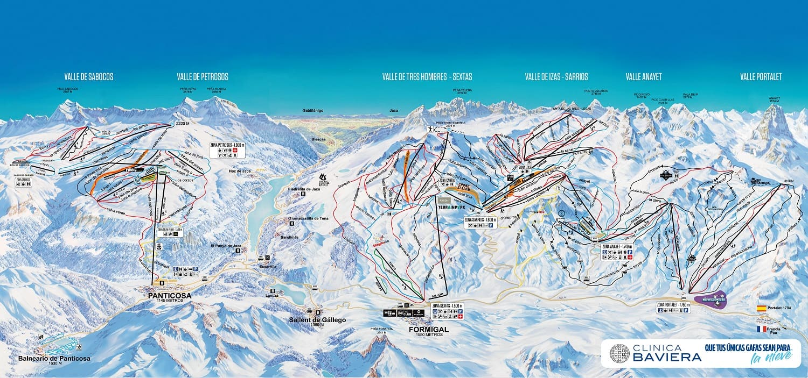

Formigal-Panticosa
Aramón Formigal-Panticosa es la estación por excelencia del Valle de Tena y una de las más grandes del pirineo. 180 kms de esquí, gastronomía y experiencias 100% para todos los gustos. ¡Seas como seas, tenemos una montaña para tí!
Formigal
Formigal es una estación de esquí de los Pirineos, en el nordeste de España. Es una de las estaciones de esquí de Aramón Formigal-Panticosa y ofrece acceso a pistas situadas en cuatro valles. Al este, el municipio de Sallent de Gállego alberga la iglesia gótica de Nuestra Señora de la Asunción y un puente de piedra del siglo XVI. Al sur, Lacuniacha es un parque natural arbolado, con fauna silvestre como bisontes, renos y osos.
Panticosa
El nombre completo es Panticosa - Los Lagos y está situada en el valle de Tena, al igual que Formigal. Junto con Cerler y las estaciones turolenses de Javalambre y Valderlinares forman Aramón (montañas de Aragón). Las pistas de esta estación también discurren por el valle de Sabocos a 2220 m sobre el nivel del mar, la zona de más altitud. Además hay un camino que va desde la base de la telecabina y que sube hasta la cota de 1900 m valle de Petrosos, es una pista para esquí alpino (Estrimal, roja) , en la zona se puede hacer deporte de raquetas de nieve, esquí de travesía o simplemente un paseo.
